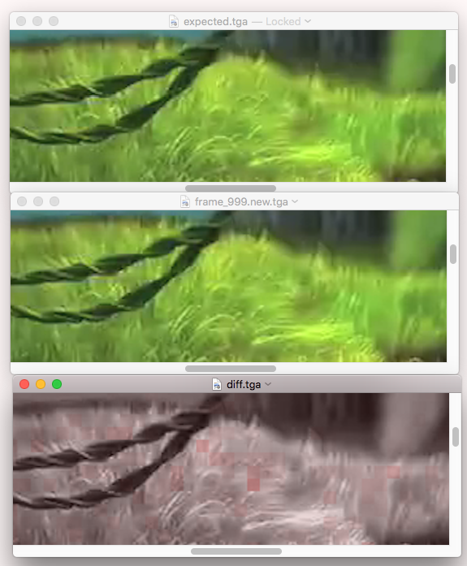
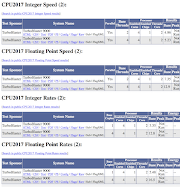

SPEC CPU®2017 Utilities
Contents
Introduction + note to Windows users
This document describes various useful utilities that ship with SPEC CPU®2017, a product of the SPEC® non-profit
corporation (about SPEC). With apologies to users of Microsoft
Windows systems, most examples use Unix syntax.
Microsoft Windows users, please use your
imagination as you read this document. |
| If you see |
Please pretend you saw |
| cat | type |
|---|
| cp | copy |
|---|
| diff | fc |
|---|
| grep | findstr |
|---|
| ls | dir |
|---|
| / | \ |
|---|
| $SPEC | %spec% |
|---|
configpp
configpp preprocesses a config file.
The preprocessor is automatically run every time that you use runcpu.
Running it separately is a good way to check whether your config file
macros do what you hope they do.
| Overview |
configpp --config=file [--define symbol[=value]]... [--output=file]
configpp -c file [-S symbol=[value]]... [-o file] |
| Caution |
Try not to confuse with specpp |
Don't say
You meant |
configpp file <— wrong
configpp -c file |
| configpp commonly-used options |
| -c file |
Same as --config |
| --config=file |
Config file to preprocess. If none specified, will look for default.cfg. |
| --define symbol[=value] |
Set the symbol to value. If you do not specify a value, behaves as an
empty string in text contexts, 1 in numeric contexts, or true in logical contexts (because in Perl,
1 is true). |
| -o file |
same as --output |
| --output=file |
Where to send output. If not specified, will be sent to standard output. The suffix .cfg will be
added if you have not already done so. |
| -S symbol=value |
same as --define |
|
See also --help for additional options
|
Tips and Traps
q. Why did I get this message?
Input file "-S" not readable
a. You wanted to preprocess a config file, but instead of typing configpp you said specpp.
q. Why did I get this message?
Neither config file 'default.cfg' nor 'default.cfg.cfg' exist
a. You forgot to put --config= or -c in front of your config file name.
Therefore,
$SPEC/config/default.cfg was tried, but it does not exist.
q. Why does it seem like the output of configpp is completely different than my input?
Nothing matches at all!
a. You fell into the previous trap, only worse:
$SPEC/config/default.cfg actually exists on your system.
For much more information on the preprocessor, see its
chapter in SPEC CPU 2017 Config Files.
convert_to_development
convert_to_development removes the SPEC safety checks which normally would verify the integrity of benchmark
code, data, and tools.
Before using this utility, you should carefully consider the Tips and Traps below.
| Usage |
$ convert_to_development
Development tree conversion: /tmp/cpu2017
After this conversion, the benchmark tree named above will no longer be
usable for reportable runs. In return, all of the safety features that
ensure that sources, data, and tools are not changed are removed.
This conversion is not reversable. In order to regain the ability to do
reportable runs, it will be necessary to do a complete new reinstallation in
another location; re-running install.sh or install.bat will not be sufficient.
Do you still want to continue with this conversion?
yes
Successfully performed development tree conversion.
$ |
An academic or research user might consider using convert_to_development while investigating performance
effects of alternate source code and data sets.
Tips and Traps
| Not reportable |
Warning: It is not possible to use
--reportable in a development tree.
All reports are marked Invalid. |
| Fair Use |
Measurements from a development tree are not official SPEC metrics. Any public use is subject to disclosure
requirements, which are described in SPEC's Fair Use
Rule. |
| One-way street |
Warning: After a tree is converted to development, it cannot be converted back.
To do reportable runs, you will need to re-install, in a new location, using your original SPEC distribution
media (ISO image). |
| Binaries not transferable |
Benchmark binaries built in one type of tree (reportable or development) cannot be used in the other type unless
you set verify_binaries=no. |
| Alternatives |
Before using convert_to_development, you may want to check out use of a
build sandbox, or
run sandbox, or the document
Avoiding runcpu. |
dumpsrcalt
dumpsrcalt displays the contents of a src.alt (a compressed tar file created by makesrcalt), without necessarily having to apply it.
| Overview |
dumpsrcalt [--summarize] src.alt |
|
See also dumpsrcalt --help for additional options
|
To find out what is in a src.alt, it may be easiest to just apply it.
Or, you can use dumpsrcalt, which displays the differences in a form that will be familiar to users of
patch utilities. To find out more about the utility, please see its --help.
extract_config reads a rawfile, decodes the config file that produced it, and writes the config
file to a file or to standard output.
| Overview |
extract_config rawfile |
|
See extract_config --help for options
|
The extracted config file will have these differences vs. the original:
An extracted config file will exactly match a config file as printed by
rawformat --output_format=config with one exception: if you have edited the raw file, it will not include your edits.
Example: first, a config file is extracted:
$ ls
CPU2017.504.intrate.rsf
$ extract_config CPU2017.504.intrate.rsf
Wrote "CPU2017.504.intrate.cfg"
$ mv CPU2017.504.intrate.cfg from_extract_config
The extracted config file was moved out of the way, so it won't be over-written when we run
rawformat:
$ rawformat --output_format=config,nocheck CPU2017.504.intrate.rsf | grep format:
format: cfg -> CPU2017.504.intrate.cfg, CPU2017.504.intrate.orig.cfg
If you edit a rawfile, the .orig.cfg shows what the config file looked
like prior to editing. It matches the extracted config file (with the exception of having one extra line).
$ diff CPU2017.504.intrate.orig.cfg from_extract_config
454a455
>
$ (Notes about examples)
extract_flags reads a rawfile, decodes any flags files
that are stored within it, and writes them to one of several destinations.
| Overview |
extract_flags rawfile |
|
See extract_flags --help for options
|
A flags file has a concept of a suggested
filename. When writing an output file, that is the first preference.
A second choice would be to match the
name of the input file.
A final choice would be to specify an arbitrary new name.
Each of these is shown in the examples below (use --help for a description of
the switches).
$ ls
CPU2017.714.intrate.rsf
$
$ extract_flags CPU2017.714.intrate.rsf
Reading "CPU2017.714.intrate.rsf"
Wrote "gcc.xml"
$
$ extract_flags --nofilename CPU2017.714.intrate.rsf
Reading "CPU2017.714.intrate.rsf"
Wrote "CPU2017.714.intrate.xml"
$
$ cat CPU2017.714.intrate.rsf | extract_flags --nofilename --basename=rutabaga
Reading from stdin
Wrote "rutabaga.xml"
$
extract_misc is an UNSUPPORTED utility that reads a rawfile and decodes a requested section. It generalizes
the features of extract_config and extract_flags to allow
extraction of any named section.
| Overview |
specperl $SPEC/bin/scripts.misc/extract_misc section rawfile
On Windows systems, try:
specperl %SPEC%\bin\scripts.misc\extract_misc
|
| section |
The section will depend on the contents of the particular rawfile that you are examining.
For example, it might look like this:
spec.cpu2017.results.<benchmark>.<base|peak>.<iter>.powersamples
where
<benchmark> is the full benchmark name and
<iter> is the iteration number (3 digits,
starting with 000)
|
| Caution |
This utility is officially unsupported. |
Output is always to standard out.
extract_misc may be particularly useful when verifying that your power and temperature measurements are
working as intended.
Example: You could check out the temperature samples from the first run of the first benchmark
in SPEC CPU 2017 result 00001 using:
$ wget -q https://www.spec.org/cpu2017/results/res2017q2/cpu2017-20161026-00001.html
$ extract_raw cpu2017-20161026-00001.html
cpu2017-20161026-00001.html: Wrote "cpu2017-20161026-00001.rsf"
$ specperl $SPEC/bin/scripts.misc/extract_misc \
spec.cpu2017.results.503_bwaves_r.base.000.tempsamples \
cpu2017-20161026-00001.rsf > tmp.tmp
The above command extracts one very long line. Here is the first temperature sample from that
line:
$ cut -b 27-70 tmp.tmp
'temp' => ['21.5'],'ts' => '1479362566.394',
and if you ask specperl to translate that timestamp, it reports that it is from 17-Nov-2016:
$ specperl -e 'print scalar localtime(1479362566.394), "\n";'
Thu Nov 17 01:02:46 2016
extract_raw reads an HTML, PDF, or PostScript report and extracts the rawfile that generated it.
| Usage |
extract_raw <report> |
| Caution |
You might or might not be able to extract from an HTML file if it was saved from a browser.
Try "Save as Web Page, HTML only", not "Save as Web Page, complete".
|
The raw file is the most important of the outputs.
If you have it, you can re-generate any of the others using rawformat.
q. I lost my rawfile. Do I have any hope?
a. Maybe. Did you save an HTML, PDF, or PostScript report?
$ ls
CPU2017.714.intrate.pdf
$ extract_raw CPU2017.714.intrate.pdf
CPU2017.714.intrate.pdf: Wrote "CPU2017.714.intrate.rsf"
$ rawformat --output_format=ps,html,txt,csv,config,nocheck CPU2017.714.intrate.rsf > /dev/null
$ ls
CPU2017.714.intrate.cfg CPU2017.714.intrate.orig.cfg CPU2017.714.intrate.txt
CPU2017.714.intrate.csv CPU2017.714.intrate.pdf invalid.gif
CPU2017.714.intrate.flags.html CPU2017.714.intrate.ps
CPU2017.714.intrate.html CPU2017.714.intrate.rsf
$ (Notes about examples)
flag_dump
flag_dump (or flags_dump) reads an XML
flag description and creates a human-readable HTML version from it.
| Usage |
flag_dump <XML flags file>...
flags_dump <XML flags file>... |
| Caution |
The utility assumes that you are fomatting a user flags file.
If you try to use it for one of the SPEC-provided flags files, it will probably refuse, because SPEC's
files include mandatory flags, which user flags
files are not allowed to use. |
If you are writing a flags file, you should both:
- Verify XML correctness with specrxp.
Verify HTML correctness of its included HTML components:
Example:
$ ls
MS-VisualStudio.xml clang.xml
Oracle-Developer-Studio-12.5.xml gcc.xml
$ flags_dump *xml
Processing MS-VisualStudio.xml...wrote MS-VisualStudio.html
Processing Oracle-Developer-Studio-12.5.xml...wrote Oracle-Developer-Studio-12.5.html
Processing clang.xml...wrote clang.html
Processing gcc.xml...wrote gcc.html
$ (Notes about examples)
go (Unix only)
go provides a handy alias to navigate a SPEC CPU 2017 directory tree.
If you just say go (without any argument) your directory is set to $SPEC.
Other destinations are described in the table below.
| Summary |
go destination [subdir]... |
| Pre-requisite |
Source shrc or cshrc to
set
paths
|
| Available destinations |
top $SPEC
bin $SPEC/bin
config $SPEC/config
Docs|docs $SPEC/Docs
result $SPEC/result
cpu $SPEC/benchspec/CPU/
nnn.benchmark $SPEC/benchspec/CPU/nnn.benchmark
nnn Same, if nnn matches a benchmark
substring Same, if substring matches the start of a benchmark name;
{build|exe|run} If you are already under some nnn.benchmark, goes to
nnn.benchmark/{build|exe|run}
|
Notes
- If you start a sub-shell, the alias probably will not work until you once again source
shrc or cshrc.
- The alias is unlikely to work in scripts. Check your shell documentation.
- go does not know directories that are created by
expid.
- go does not know about output_root directories,
but ogo does!
Examples
$ go
/spec/cpu2017/rc4
$ go result
/spec/cpu2017/rc4/result
$ go 500 exe
/spec/cpu2017/rc4/benchspec/CPU/500.perlbench_r/exe
If you abbreviate a benchmark name, the first matching benchmark is used.
Below, it would be easier to just type go 600.
$ go perlbenc exe
/spec/cpu2017/rc4/benchspec/CPU/500.perlbench_r/exe
$ go perlbench_s exe
/spec/cpu2017/rc4/benchspec/CPU/600.perlbench_s/exe
$ go build
/spec/cpu2017/rc4/benchspec/CPU/600.perlbench_s/build
You can string subdirectories together.
$ go bin lib Math BigInt
/spec/cpu2017/rc4/bin/lib/Math/BigInt
$ (Notes about examples)
imagevalidate
|
imagevalidate compares two images for acceptable similarity. The validator uses the Structural
SIMilarity (SSIM) index method (wikipedia) to compare blocks of 8x8 pixels.
For every block, an SSIM index is computed in the range of -1 to +1, where +1 means identical.
runcpu automatically uses imagevalidate to verify the operation of several benchmarks.
Most SPEC CPU 2017 users will not need to know how it works, but you might want to know if you are debugging
verification errors.
| Overview |
imagevalidate_... [-avg] [-maxthreshold n] [-threshold n] image1 image2
imagevalidate_... -diff file image1 image2 |
| Location |
The image validator is built along with the benchmarks that use it. The exact name varies. Look in
the directory nnn.benchmark/exe for a filename that starts with "imagevalidate". The name
will include the benchmark number, the tuning, and any
applicable label.
|
|
Are both of these 'correct'?


Sometimes the answer is obvious.
AVG SSIM=0.661
|
| imagevalidate commonly-used options |
| -avg |
Print the average similarity, instead of printing a similarity score for every block. |
| -diff file |
Create a tga (Targa) image with pixel-by-pixel differences |
-maxthreshold n
-maxthreshold n%
-maxthreshold 0.n
|
Each block is compared to a similarity threshold. The -maxthreshold
determines how many are allowed to fall below the threshold before the program declares a comparison error.
The value can be expressed as an absolute number of blocks, or as a percentage, or as a fraction. For
example, if 2000 blocks are compared, each of these would allow 20 blocks to fall below the threshold:
-maxthreshold 20
-maxthreshold 1%
-maxthreshold .01
|
| -threshold n |
Set the acceptable similarity index for block-by block comparisons.
The number n must be a value between 0
and 1. |
|
See also --help for additional options
|
|
Sometimes, it's a little harder to decide


AVG SSIM=0.998
|
To find out how a benchmark uses the validator, go to a run directory and use specinvoke -n
compare.cmd, as in the example below:
$ cat parrot.cfg
iterations = 1
label = NorwegianBlue
output_root = /tmp/val
runlist = 511.povray_r
size = test
tune = base
default:
CC = gcc
CXX = g++
CC_VERSION_OPTION = -v
CXX_VERSION_OPTION = -v
$ cat parrot.sh
runcpu --config=parrot | grep txt
cd /tmp/val/benchspec/CPU/511.povray_r/run/run*
echo
specinvoke -nr compare.cmd | grep NorwegianBlue
$ ./parrot.sh
format: Text -> /tmp/val/result/CPU2017.001.fprate.test.txt
../run_base_test_NorwegianBlue.0000/imagevalidate_511_base.NorwegianBlue
SPEC-benchmark.tga
/Users/chrisp/notlob/cpu2017/rc5/benchspec/CPU/511.povray_r/data/test/compare/SPEC-benchmark.org.tga
$ (Notes about examples)
In the above example, the validator compares a file written by the benchmark (SPEC-benchmark.tga) to the expected outputs in the 511.povray_r/data/test/compare/ directory.
Although not shown above, if you examine all the commands that are printed by
specinvoke -nr compare.cmd
you would see that there is also an additional step. The file
$SPEC/benchspec/CPU/511.povray_r/data/test/output/imagevalidate_SPEC-benchmark.tga.out
which contains lines of the form:
(0,0) SSIM = 1.000000000
is compared using
specdiff --reltol 0.06
thereby effectively putting a lower bound on SSIM of 0.94.
Imagevalidate Histogram
A histogram of SSIM values is available in stderr with a count of blocks that fall into various similarity groupings.
For example, a histogram for a particular run of 525.x264_r shows
that although the results for frame 999 matched the expected version with an average SSIM of 0.952283700, and although 12702
blocks were above .90, there was a "tail" of dissimilar blocks, including 39 in the range of .6 to .7, 4 in the range of .5 to .6,
and 2 that fell below 0.5.
$ cat imagevalidate_frame_999.err
ImageValidator r3528
INFO: threshold set to 0.500000
INFO: max threshold set to 20 absolute, 0.000000 relative
frame_999.yuv: INFO:
Blocks below threshold: 2 blocks of 20 allowed (14400 total)
AVG SSIM: 0.952283700
MIN SSIM: 0.494511796
SSIM distribution:
[ 1.000]: 59
[ 0.900, 1.000): 12702
[ 0.800, 0.900): 1379
[ 0.700, 0.800): 215
[ 0.600, 0.700): 39
[ 0.500, 0.600): 4
[ 0.400, 0.500): 2
[ 0.300, 0.400): 0
[ 0.200, 0.300): 0
[ 0.100, 0.200): 0
[ 0.000, 0.100): 0
[-0.100, 0.000): 0
[-0.200, -0.100): 0
[-0.300, -0.200): 0
[-0.400, -0.300): 0
[-0.500, -0.400): 0
[-0.600, -0.500): 0
[-0.700, -0.600): 0
[-0.800, -0.700): 0
[-0.900, -0.800): 0
[-1.000, -0.900): 0
$
|
Acceptable? Or not?
AVG SSIM=0.952283700
|
Imagevalidate Difference Images
If you would like to see the differences, the utility can guide you to them with a block-by-block
difference image. The file on the right has red markings where there are differences, with a white rectangle added by hand
afterwards, centered on the worst differences. It
was produced using the procedure below.
The outputs from 525.x264_r include a yuv output file.
Copy the expected output to this directory for convenience, run the validator with the
-diff and -dumpfile switches:
$ ls -l *999* | cut -b 30-999
1382400 May 31 08:44 frame_999.yuv
917 May 31 08:50 imagevalidate_frame_999.err
38 May 31 08:50 imagevalidate_frame_999.out
23 May 31 08:51 imagevalidate_frame_999.out.cmp
$ ls *tga
*tga: No such file or directory
$ data=$SPEC/benchspec/CPU/525.x264_r/data
$ cp $data/refrate/compare/frame_999.org.tga ./expected.tga
$ ./imagevalidate_525_peak.may30c -avg -diff diff.tga \
-dumpfile frame_999.yuv ./expected.tga 2>/dev/null
frame_999.yuv: AVG SSIM = 0.952283700
$
|
Imagevalidate uses red for differences.
A white box was added by hand, surrounding the
reddest area.
|
$ ls -l *tga | cut -b 30-999
2764818 Jun 2 07:52 diff.tga
2764818 Jun 2 07:52 expected.new.tga
2764818 Jun 2 07:51 expected.tga
2764818 Jun 2 07:52 frame_999.new.tga
$ specmd5sum *tga
6d3dd515cd3ebfa4ba9fcde9bb055eef *diff.tga
316ed7c95fd4911de70ed13d496623ea *expected.new.tga
316ed7c95fd4911de70ed13d496623ea *expected.tga
22cac65989c128ce7b592e191ffe99a4 *frame_999.new.tga
$
Now there are 4 .tga files: the one that was copied in
(expected.tga); a tga dump of that file, which is, of course, identical
(expected.new.tga); a tga version of the benchmark's rendering of frame 999
(frame_999.new.tga); and a map of the differences
(diff.tga).
To use these files, open them on a computer that knows about TGA format. The difference map uses red for areas that
differ, with more and more red as SSIM approaches -1. The illustration shows an excerpt of these three files,
centered on the single-worst reported block (SSIM index 0.494511796).
|

|
|
Notice that even when the eye knows exactly where to look, it can be difficult to spot the particular
differences reported for this field of grass.
|
The differences become more apparent with additional cropping and
zooming:
Bottom line: yes, there are some visual differences by frame 999, presumably due to accumulated floating point
differences, but they are rare; and in context, the overall average SSIM index of 0.952283700 seems like a good indicator
that most people would not be aware of video artifacts in this frame.
index (UNSUPPORTED)
index prepares an HTML index for a set of results.
| Usage |
Populate a directory with results, then say:
$SPEC/bin/scripts.misc/index
On Windows systems, try:
specperl %SPEC%\bin\scripts.misc\index
|
| Caution |
This utility is officially unsupported. |
As you are preparing sets of results, you might find it handy to use scripts.misc/index.
The utility is officially unsupported because its primary intent is for use at the SPEC website; features may therefore be
added, subtracted, or adjusted for convenience of the SPEC webmasters, rather than for user convenience. It might work for
you; or you might use it as a basis for writing your own utility. You are welcome to try it out, but please do not submit
support requests against it.
| In this example, a SPEC documentation writer has lightly disguised his laptop as the fictional
TurboBlaster 9000, and proceeds as if preparing for publication. He picks the runs that would be prepared for
publication review, and copies them to a separate directory:
|
|
 |
$ cd $GO/result
$ mkdir prep_for_pub
$ cp CPU2017.007.intspeed.rsf prep_for_pub/TurboBlaster9000.intspeed.1thread.rsf
$ cp CPU2017.001.intrate.rsf prep_for_pub/TurboBlaster9000.intrate.1copy.rsf
$ cp CPU2017.008.fpspeed.rsf prep_for_pub/TurboBlaster9000.fpspeed.1thread.rsf
$ cp CPU2017.006.fprate.rsf prep_for_pub/TurboBlaster9000.fprate.1copy.rsf
$ cp CPU2017.504.intrate.rsf prep_for_pub/TurboBlaster9000.intrate.4copy.rsf
$ cp CPU2017.505.fprate.rsf prep_for_pub/TurboBlaster9000.fprate.4copy.rsf
$ cp CPU2017.076.intspeed.rsf prep_for_pub/TurboBlaster9000.intspeed.4thread.rsf
$ cp CPU2017.077.fpspeed.rsf prep_for_pub/TurboBlaster9000.fpspeed.4thread.rsf
$ cd prep_for_pub/
$ vi *rsf
As noted in the section on rawformat, a result rawfile may be edited to update
reader fields, such as the system description. After doing so, the results are formatted, and the index is generated.
$ rawformat --flags $SPEC/config/flags/gcc.xml \
-output_format=all *rsf > rawformat.log
$ $SPEC/bin/scripts.misc/index
$ (Notes about examples)
|
makesrcalt
makescralt packages alternative source into a compressed tar file, known as a src.alt.
| Overview |
mkdir nnn.benchmark/src/src.alt/name
cp sources... nnn.benchmark/src/src.alt/name
cp README nnn.benchmark/src/src.alt/name
makesrcalt nnn.benchmark name
|
| Caution |
SPEC must approve your src.alt before you publish any results using it. |
| makesrcalt commonly-used options and operands |
| --usewith <min>:<max> |
Versions eligible to use the alternate source.
If not specified, defaults to the currently-installed version. |
| nnn.benchmark |
The benchmark that uses this alternate source.
|
| <srcaltname> |
A name for your alternate source.
For convenience, make it short.
Use only letters, digits, and underscores. |
|
See also --help for additional options
|
SPEC will post approved CPU 2017 src.alts at
www.spec.org/cpu2017/src.alt.
Users apply them
via the config file src.alt option.
src.alt Development
If you believe that changes are needed to SPEC source code, here is the process to follow.
- Develop your changes in a build sandbox.
Determine where the original benchmark sources are located. For shared directories, use the
SPECrate variant:
Most SPECspeed® benchmarks (
6nn.benchmark_s) share content that is located
under a corresponding SPECrate® benchmark (
5nn.benchmark_r). Shared sources files may be
compiled differently for SPECspeed vs. SPECrate. For
example, the sources for
619.lbm_s can be found at
519.lbm_r/src/ and
only
619.lbm_s can be compiled with OpenMP.
- Create a directory nnn.benchmark/src/src.alt/name with your modified sources.
- Create a draft README in that directory. See previous postings at
www.spec.org/cpu2017/src.alt (or
www.spec.org/cpu2006/src.alt).
In your draft, kindly do NOT claim that it is approved; the release manager
will do that at the last minute.
- Use makesrcalt as shown above.
- Test it with all workload sizes.
- If the sources are used by more than one benchmark, test all sizes for other affected benchmarks.
- Contact SPEC to get the src.alt approved.
makesrcalt Example
In this example, a comment is added to a source file:
$ pwd
/cpu2017/rc4/benchspec/CPU/549.fotonik3d_r/src/src.alt/addAcomment
$ ls
README init.F90
$ diff -u ../../init.F90 init.F90
! HISTORY
! Written by Ulf Andersson
+! comment added by Src Alternator
!
$ makesrcalt --usewith 0.904 549.fotonik3d_r addAcomment
Making 'addAcomment' src.alt for 549.fotonik3d_r
This will be usable with version 0.904 of the suite.
Making differences and computing hashes...
Writing control file...
Gathering files...
Wrote /cpu2017/rc4/549.fotonik3d_r.addAcomment.cpu2017.kit0.904.tar.xz
Finished making 'addAcomment' src.alt for 549.fotonik3d_r. Elapsed time: 0 seconds
$ (Output subsetted for brevity.)
(Notes about examples)
ogo (Unix only)
ogo provides a handy alias that navigates *both*
- $SPEC - a SPEC CPU 2017 directory tree
- $GO - a related tree created by output_root
ogo automatically picks a tree and a directory depending on whether you want to move
to a read-only directory (e.g. perlbench src) or an output directory (e.g. perlbench build).
| Summary |
ogo destination [subdir]... |
| Pre-requisites |
1. Source shrc or cshrc to
set
paths
2. Define the variable GO to match your output_root.
|
| Caution |
C shell users must set GO to an actual path, not a symbolic link. |
Available destinations are the same as
for go.
If you want shorter messages, set the variable OGO_NO_WARN.
|
Notes
- If you start a sub-shell, the alias probably will not work until you once again source
shrc or cshrc.
- The alias is unlikely to work in scripts. Check your shell documentation.
- ogo does not know directories that are created by
expid.
-
New with CPU 2017:
%{ENV_GO} can be usefully combined with ogo
Set GO once, at login.
Config files can pick it up from an
ENV macro
$ grep GO ~/.bashrc
export GO=/tmp/outputs
$ cat autoroot.cfg
output_root = %{ENV_GO} # pick up automatically from environment
iterations = 1
label = xyzzy
runlist = 505.mcf_r
size = test
default:
CC = gcc
CC_VERSION_OPTION = -v
$ cat autoroot.sh
runcpu --config=autoroot | grep txt
$ ./autoroot.sh
format: Text -> /tmp/outputs/result/CPU2017.001.intrate.test.txt
ogo handily moves around in the directories from the above command.
It confirms your destination underneath $GO.
$ ogo
Using value in GO for output_root: /tmp/outputs
/tmp/outputs
$ ogo mcf run
Using value in GO for output_root: /tmp/outputs
/tmp/outputs/benchspec/CPU/505.mcf_r/run
$ ogo exe
Using value in GO for output_root: /tmp/outputs
/tmp/outputs/benchspec/CPU/505.mcf_r/exe
$ ls
mcf_r_base.xyzzy
If you get tired of the two-line message, you can shrink it by setting OGO_NO_WARN.
$ OGO_NO_WARN="quiet please"
$ ogo mcf run
/tmp/outputs/benchspec/CPU/505.mcf_r/run
ogo uses the tree rooted at $SPEC if the destination is read-only (mcf src).
$ ogo mcf src
/spec/cpu2017/rc4/benchspec/CPU/505.mcf_r/src
$ (Notes about examples)
port_progress
port_progress analyzes log files and summarizes errors. It was primarily used during the benchmark porting
phase for SPEC CPU 2017 (thus its name), but it can still come in handy, for example when trying the benchmarks with a new
compiler.
| Usage |
port_progress [-b benchmarks] [-c config] [-q] [--rate] [--skipnt] [--speed] [--table] [-a|logs...] |
| port_progress commonly-used options |
| -b benchmarks |
Only report matching benchmarks (you can use a regexp). |
| -c config |
Only report matching config files (you can use a regexp).config. |
| --rate |
Report only about SPECrate (5xx) benchmarks |
| --speed |
Report only about SPECspeed (6xx) benchmarks |
| -q |
Slightly less annoying verbosity |
| --table |
Much less annoying verbosity |
| --skipnt |
Please shut up about things that were Not Tested. |
| -a|logs... |
Report on All or on selected logs |
|
See also --help for additional options
|
port_progress quickly summarizes the completion status for a series of runs. The report is organized into
columns laid out by config file, tuning (base or peak), and workload size
(Te for test, Tr for train, Ref for ref). Each benchmark and
workload is summarized using codes such as:
S - Success
CE - Compile error
RE - Run time error (did not finish; crashed or core dumped)
VE - Verification Error (it finished, but got the wrong answer)
In the example below, the tester has been trying several compiler versions (X, Y, and Z) using several config files. A report is
requested only for the troublesome benchmarks - all of which worked with the most recent compiler.
$ port_progress -q -a --skipnt --table -b 'gcc|blender|cam|pop'
Looking for benchmarks that match 'gcc|blender|cam|pop'
SPEC CPU2017 v0.905.1
Wed Mar 15 13:16:11 2017
--------- --------- ---------
mar10h-X mar11a-Y mar11b-Z
--------- --------- ---------
Base Base Base
--------- --------- ---------
Te Tr Ref Te Tr Ref Te Tr Ref
-- -- --- -- -- --- -- -- ---
502.gcc_r S S VE S S S S S S
602.gcc_s S S VE S S S S S S
526.blender_r S S VE S S VE S S S
527.cam4_r S S VE S S S S S S
627.cam4_s S S VE S S S S S S
628.pop2_s VE VE VE VE VE VE S S S
printkids.pl
printkids.pl prints a table showing the execution times for each of a
benchmark's subcomponents. Before using it, cd to a run directory.
| Usage |
printkids.pl [--columns=N] [--truncate] [--wrap]
Windows: %SPEC%\bin\specperl %SPEC%\bin\tools\printkids.pl &etc |
| printkids.pl commonly-used options |
| --columns=N |
Limit output to the requested width |
| --truncate |
Content wider than the requested number of columns is chopped off (default). |
| --wrap |
Content wider than the requested number of columns is wrapped. |
|
See also --help for additional options
|
Some benchmark executables are invoked multiple times. If you'd like to know how much time was spent on each invocation,
you can examine the log file, or you can go to a run directory and use
printkids.pl. In the example below, the ref run for 525.x264_r has three parts, and it is
apparent that the first part is the shortest.
$ ogo 525 run
Using value in GO for output_root: /Users/somebody/spec/cpu2017/out.rc5
/Users/somebody/spec/cpu2017/out.rc5/benchspec/CPU/525.x264_r/run
$ cd run_base_refrate_mar10a-m64.0000/
$ printkids.pl --wrap --columns=90
Seconds Command
46.58 x264_r_base.mar10a-m64 --pass 1 --stats x264_stats.log --bitrate 1000 --frames
1000 -o BuckBunny_New.264 BuckBunny.yuv 1280x720
159.59 x264_r_base.mar10a-m64 --pass 2 --stats x264_stats.log --bitrate 1000 --dumpyuv
200 --frames 1000 -o BuckBunny_New.264 BuckBunny.yuv
1280x720
162.37 x264_r_base.mar10a-m64 --seek 500 --dumpyuv 200 --frames 1250 -o
BuckBunny_New.264 BuckBunny.yuv 1280x720
=========
368.54 Total by adding children
368.54 Total according to speccmds.out
$
printpath
printpath.pl is a script that can be used on Windows to print the path in a format that is easier to read.
You can send the output to a file, which can then be easily edited.
| Usage: |
printpath |
| or: |
%SPEC%\bin\specperl %SPEC%\bin\windows\printpath.pl |
| (After you edit and use shrc.bat, either spelling
should work.) |
In the example below, printpath.pl makes it easier to notice that cygwin (a Windows/Unix compatibility product)
is in the path. SPEC recommends that your %PATH% should not include Windows/Unix compatibility products, because these
have sometimes contributed to hard-to-diagnose
errors (link goes to a CPU 2006 FAQ).
C:\cpu2017\rc5>echo %PATH%
C:\cpu2017\rc5\bin\windows;C:\cpu2017\rc5\bin;C:\ProgramData\Oracle\Java\javapat
h;C:\windows\system32;C:\windows;C:\windows\System32\Wbem;C:\windows\System32\Wi
ndowsPowerShell\v1.0\;c:\cygwin\bin;c:\unison
C:\cpu2017\rc5>specperl %SPEC%\bin\windows\printpath.pl
PATH=^
C:\cpu2017\rc5\bin\windows;^
C:\cpu2017\rc5\bin;^
C:\ProgramData\Oracle\Java\javapath;^
C:\windows\system32;^
C:\windows;^
C:\windows\System32\Wbem;^
C:\windows\System32\WindowsPowerShell\v1.0\;^
c:\cygwin\bin;^
c:\unison
rawformat is the report writer for SPEC CPU 2017.
It creates HTML, PDF, and many other forms of output.
rawformat is automatically invoked by runcpu at the end of a performance test.
It can be invoked directly, by typing rawformat, or
equivalently by typing runcpu --rawformat.
(The name rawformat indicates that its input is a raw data file generated by an experiment, which it transforms into various formats.)
| Usage |
rawformat [options] rawfiles... |
| rawformat commonly-used options |
| --basepeak |
Copy base results to peak |
| --basepeak=bench[:bench...] |
Copy base results to peak for the benchmarks specified |
| --baseonly |
Discard peak results and report only base |
| --flagsurl=URL |
Use the file at URL as a flags description file. This option may be specified multiple times. |
| --http_proxy=HOST[:PORT] |
Use HOST as a proxy when fetching flags files or suite updates. If unspecified, PORT defaults to 80. |
| --output_format=FORMAT[:...] |
Set the output format FORMAT is one of: all, cfg, check, csv, flags, html, mail, pdf, ps, raw, screen, text. By
default, includes the check format, unless you include
nocheck among your list of formats. |
Options for rawformat can be included on your runcpu command line; therefore, for
convenience, they are described in the document Using SPEC CPU 2017:
The 'runcpu' Command.
See also rawformat --help
|
You might use rawformat many times just before completing a project, as you
go through cycles of the form
rawformat-review-edit-rawformat-review-edit-rawformat...
until finally you get to ...publish!
Editing rawfiles (ONLY above the fence!)
A result rawfile may be edited to update reader fields, such
as the system description.
The fields that you are allowed to edit are the ones located above the "fence":
# =============== do not edit below this point ===================
Caution: do not change your original rawfile. Keep it safely as a backup. Instead, copy the
original to a new file, and then edit the copy.
Syntax: Rawfiles have some difference from config files:
- Field names are preceded by spec.cpu2017.
- Config files use equal signs; rawfiles use colons
- If a field continues across multiple lines, you must use numbers on all of them. You cannot mix numbered and
un-numbered lines for a single field.
Example: Edit the system name.
Just before Announcement Day, and after you have run all
your tests,
Marketing decides to change the system name from:
"Turboblaster 9000"
to
"Turbo Blaster 9000"
You may edit the rawfile, provided that you edit only the reader fields, above the fence.
Start by making a new copy:
$ grep hw_model CPU2017.008.fpspeed.rsf
spec.cpu2017.hw_model: Turboblaster 9000
$ mkdir prep_for_publication
$ cp CPU2017.008.fpspeed.rsf prep_for_publication/tb9000.fpspeed.rsf
$ cd prep_for_publication/
Make your edits:
$ vi tb9000.fpspeed.rsf
$ diff ../CPU2017.008.fpspeed.rsf ./tb9000.fpspeed.rsf
9c9
< spec.cpu2017.hw_model: Turboblaster 9000
---
> spec.cpu2017.hw_model: Turbo Blaster 9000
And re-generate your reports:
$ rawformat --output_format txt,html,csv tb9000.fpspeed.rsf
rawfile continued fields
When editing fields that have more than
one line, you cannot mix numbered and un-numbered versions of a single field.
Instead, you must use a number on both of them:
| WRONG: |
spec.cpu2017.sw_compiler: C/C++: Version 17.0.0.098 of Intel C/C++
spec.cpu2017.sw_compiler1: Compiler for Linux
|
| RIGHT: |
spec.cpu2017.sw_compiler000: C/C++: Version 17.0.0.098 of Intel C/C++
spec.cpu2017.sw_compiler001: Compiler for Linux
|
rawfiles only: test_date
For SPEC CPU 2017, one field is ignored in config files, but may be set in a raw file:
| test_date
|
When the tests were run. This field is populated automatically based on the clock in the system
under test. Setting this in the config file will generate a warning and the setting will be ignored. If your system
clock is incorrect, then the value may be edited in the raw file. It's better to avoid the necessity to edit, by
setting your system clock properly.
|
rawformat --nopower
It is permitted to reformat a power+performance run as performance-only, using rawformat
--nopower. You may wish to do so if a run is marked invalid due to sampling or other problems detected during
power measurement.
Using this option will produce a new rawfile as its only action. To produce your reports, enter a second
rawformat command with the desired output_format
selections.
For example, run #48 did not produce any reports, because some (but not all) benchmarks failed:
$ grep -A2 format: CPU2017.048.log
format: raw -> /spec/johnh/out.pre1.1-502/result/CPU2017.048.intrate.refrate.rsf
ERROR: Compressed power samples could not be extracted.
Formatting aborted
$
$ ls CPU2017.048*
CPU2017.048.intrate.refrate.rsf
CPU2017.048.log
CPU2017.048.log.debug
$
The rawfile is copied to a new directory, where the first rawformat command creates a new
rawfile:
$ mkdir reformat
$ cp CPU2017.048.intrate.refrate.rsf reformat
$ cd reformat
$ rawformat --nopower CPU2017.048.intrate.refrate.rsf
. . .
Formatting CPU2017.048.intrate.refrate.rsf
Renaming previous rawfile to CPU2017.048.intrate.refrate.rsf.old.0
format: raw -> CPU2017.048.intrate.refrate.nopower.rsf
rawformat finished at 2019-04-26 08:32:40; 17 total seconds elapsed
$ ls
CPU2017.048.intrate.refrate.nopower.rsf
CPU2017.048.intrate.refrate.rsf.old.0
$
and the second rawformat command creates a text report:
rawformat --output_format=text,nosubcheck CPU2017.048.intrate.refrate.nopower.rsf
. . .
Doing flag reduction: done
format: Text -> CPU2017.048.intrate.refrate.nopower.txt
rawformat finished at 2019-04-26 08:35:08; 27 total seconds elapsed
$
$ ls
CPU2017.048.intrate.refrate.nopower.rsf
CPU2017.048.intrate.refrate.nopower.txt
CPU2017.048.intrate.refrate.rsf.old.0
$
specdiff
specdiff determines whether benchmark outputs match the SPEC-supplied expected outputs.
Benchmark developers define the validation criteria by specifying acceptable tolerances.
| Usage |
specdiff [--abstol n] [--calctol] [--obiwan] [--reltol n] [--skiptol n] file1 file2 |
| Caution |
--calctol is often harder to interpret than expected. |
| specdiff commonly-used options |
| --abstol n |
absolute tolerance |
| --calctol |
calculate required tolerances. See cautionary note below. |
| -l|--lines n |
# of differences to print (-1 for all) |
| -m|--mis |
Write file2.mis containing information about miscompares |
| --obiwan |
allow off-by-one errors |
| --reltol n |
relative tolerance |
| --skiptol n |
# of differences to ignore |
|
See also specdiff --help for additional options
|
Tolerances are written by runcpu to compare.cmd, which specinvoke
reads when it calls specdiff.
If you are debugging a problem, you can look at how the validation is done and you can run specdiff by
hand.
Example: Go to a run directory and find out what specdiff command would be generated using
specinvoke's dry-run switch, -n.
$ ogo fotonik run
Using value in GO for output_root: /spec/cpu2017/out.rc5
/spec/cpu2017/out.rc5/benchspec/CPU/549.fotonik3d_r/run
$ cd run_base_refrate_mar10a-m64.0000/
$ specinvoke -n compare.cmd | grep specdiff
/spec/cpu2017/rc5/bin/specperl /spec/cpu2017/rc5/bin/harness/specdiff -m -l 10
--abstol 1e-27 --reltol 1e-10 --obiwan --floatcompare
/spec/cpu2017/rc5/benchspec/CPU/549.fotonik3d_r/data/refrate/output/pscyee.out
pscyee.out 0<&- > pscyee.out.cmp
$
The above command is a bit wordy. If your paths
are set correctly, you can just say specdiff instead of /spec/cpu2017/rc5/bin/specperl
/spec/cpu2017/rc5/bin/harness/specdiff.
The example below further shortens the command by defining expected, and then varies the
tolerances and counts how many lines are generated (with wc -l).
If only 1 line is printed, there are no miscompares.
$ expected=$SPEC/benchspec/CPU/549.fotonik3d_r/data/refrate/output/pscyee.out
$ specdiff --lines=-1 --abstol 1e-27 --reltol 1e-10 --obiwan --floatcompare $expected pscyee.out | wc -l
1
$ specdiff --lines=-1 --abstol 1e-27 --obiwan --floatcompare $expected pscyee.out | wc -l
1
$ specdiff --lines=-1 --abstol 1e-28 --obiwan --floatcompare $expected pscyee.out | wc -l
1
$ specdiff --lines=-1 --abstol 1e-29 --obiwan --floatcompare $expected pscyee.out | wc -l
1
$ specdiff --lines=-1 --abstol 1e-30 --obiwan --floatcompare $expected pscyee.out | wc -l
391
$ specdiff --lines=-1 --abstol 1e-35 --obiwan --floatcompare $expected pscyee.out | wc -l
937
$ (Notes about examples)
From the above, we could conclude that the particular compiler and optimizations used in this run
produce outputs that are much closer to SPEC's expected outputs than required by the SPEC-supplied tolerance: the results
match within an abstol that is 100x tighter (1e-27 vs 1e-29).
Caution to benchmark developers: The --calctol switch answers two separate
questions, one at time: (1) Given all the other tolerances listed, what relative tolerance R would be needed in
order for these files to be considered a match? and (2) Given all the other tolerances listed, what absolute tolerance
A would be needed? Notice that:
Any particular difference D that is just barely covered by R may be much smaller than A.
Any particular difference D that is just barely covered by A may be much smaller than R.
Therefore, a benchmark developer who is considering a tolerance
change should never blindly apply the results of --calctol. Consider a much smaller change, and
recalculate.
specinvoke
specinvoke runs and times commands, after runcpu sets them up.
It can display commands needed to set up the environment and to change directories.
| Usage |
specinvoke [options] [commandfile]
If the commandfile is not named, looks for speccmds.cmd. |
| specinvoke commonly-used options |
| -n |
Print a dry run of commands, but do not actually do them. |
| -nn |
Include commands that set environment variables and commands that cd to directories. |
|
See also --help for additional options
|
Environment variables: It is important to understand that specinvoke does not
set environment variables; but you can cause them to be set by capturing the dry run output and executing it. The output of
specinvoke -nn includes commands to:
The specinvoke utility by default looks for speccmds.cmd, which is how benchmarks
are run. However, that is not its only use. The runcpu program also uses specinvoke for setting
up certain benchmarks, via inputgen.cmd; and to drive comparisons, as described in the section on
specdiff. You might want to use it to run benchmarks "by hand", or to customize the runs during a
performance analysis exercise. Several common usage examples are shown below.
You can use specinvoke to explore what will happen during a benchmark run.
In the example below, a directory was set up using runcpu
--action runsetup.
Notice that the directory has speccmds.cmd and lbm.in, but no lbm.out:
$ cd /tmp/demo_runsetup/benchspec/CPU/519.lbm_r/run/run_peak_test_fast.0000
$ ls
100_100_130_cf_a.of compare.cmd lbm.in lbm_r_peak.fast speccmds.cmd
$ specinvoke -n speccmds.cmd | grep lbm_r
../run_peak_test_fast.0000/lbm_r_peak.fast 20 reference.dat 0 1 100_100_130_cf_a.of
0<&- > lbm.out 2>> lbm.err
After using specinvoke without the dry-run (-n) switch, the files
lbm.out and lbm.err have been created:
$ specinvoke
specinvoke exit: rc=0
$ ls lbm.*
lbm.err lbm.in lbm.out
$
When something goes wrong, it is often useful to try the commands by hand.
Ask specinvoke what it did, by using
the "-n" switch:
$ go perl run
/Users/somebody/spec/cpu2017/rc5/benchspec/CPU/500.perlbench_r/run
$ cd run_base_test_may07a-m64.0000/
$ specinvoke -n
# specinvoke r<dev>
# Invoked as: specinvoke -n
# timer ticks over every 1000 ns
# Use another -n on the command line to see chdir commands and env dump
# Starting run for copy #0
../run_base_test_may07a-m64.0000/perlbench_r_base.may07a-m64 -I. -I./lib makerand.pl
0<&- > makerand.out 2>> makerand.err
# Starting run for copy #0
../run_base_test_may07a-m64.0000/perlbench_r_base.may07a-m64 -I. -I./lib test.pl
0<&- > test.out 2>> test.err
specinvoke exit: rc=0
Above, it can be seen that perlbench is run twice. From the looks of the stderr, similar failures
afflicted both runs:
$ cat makerand.err
Attempt to free unreferenced scalar: SV 0x7fc4c9014c88.
$ cat test.err
Attempt to free unreferenced scalar: SV 0x7ffae90143a0 at t/TEST line 517.
Attempt to free unreferenced scalar: SV 0x7ffae901f7f8 at t/TEST line 638.
Attempt to free unreferenced scalar: SV 0x7ffae90143a0 at t/TEST line 638.
Attempt to free unreferenced scalar: SV 0x7ffae901f7f8 at t/TEST line 662.
Attempt to free unreferenced scalar: SV 0x7ffae90147c0 at t/TEST line 680.
perlbench_r_base.may07a-m64(94080,0x7ffff25803c0)
malloc: *** error for object 0x7ffae9038508: pointer being freed was not allocated
*** set a breakpoint in malloc_error_break to debug
$
Since the problem affected both runs, you could run either in a debugger, with the command
options above (-I. -I./lib &etc).
If you want to try out your own variations on the above command by hand, you could do so.
In this particular example, nothing works, not even just verbose version information:
$ ./perlbench_r_base.may07a-m64 -V
Attempt to free unreferenced scalar: SV 0x7fa54a8031c0 at lib/strict.pm line 38.
perlbench_r_base.may07a-m64(94624,0x7ffff25803c0)
malloc: *** error for object 0x7fa54a4138a8: pointer being freed was not allocated
*** set a breakpoint in malloc_error_break to debug
Abort trap: 6
$
The reason for the above failure is that perlbench was compiled with aggressive assumptions about
aliasing.
See the discussion in the section on Known Portability Issues in the
500.perlbench_r
benchmark description.
This example demonstrates using specinvoke to find out what commands are needed to set
directories and environment variables.
To begin,
519.lbm_r is setup for 3 copies, and
ogo sets the current directory.
$ runcpu --action=runsetup --config=mar10a --size=test --copies=3 519.lbm | grep 'Setting up'
Setting up environment for running 519.lbm_r...
Setting up 519.lbm_r test base mar10a-m64 (3 copies): run_base_test_mar10a-m64.0000-0002
$ ogo lbm run
Using value in GO for output_root: /Users/somebody/spec/cpu2017/out.rc5
/Users/somebody/spec/cpu2017/out.rc5/benchspec/CPU/519.lbm_r/run
$
The runcpu command above lists the directories that are created.
The run control information will be in
the first one that was mentioned, directory run_base_test_mar10a-m64.0000.
Go there, capture the dry run to a file, and print it with line numbers:
$ cd run_base_test_mar10a-m64.0000
$ specinvoke -nn > doit.sh
$ cat -n doit.sh
1 # specinvoke r<dev>
2 # Invoked as: specinvoke -nn
3 # timer ticks over every 1000 ns
4 # Environment in effect for these runs:
5 Apple_PubSub_Socket_Render=/private/tmp/com.apple.launchd.Y0VNE6tdL4/Render
6 DISPLAY=/private/tmp/com.apple.launchd.RLSpnQHR4y/org.macosforge.xquartz:0
7 GO=/Users/somebody/spec/cpu2017/out.rc5
8 HOME=/Users/somebody
9 LANG=en_US.UTF-8
10 LC_ALL=C
11 LC_LANG=C
12 LD_LIBRARY_PATH=/Users/somebody/work/compilers/gcc-6.2.0//lib64/:
/Users/somebody/work/compilers/gcc-6.2.0//lib/:/lib64
13 LIBC_FATAL_STDERR_=1
14 LOGNAME=somebody
15 OMP_NUM_THREADS=1
16 OMP_THREAD_LIMIT=1
17 PATH=/Users/somebody/spec/cpu2017/rc5/bin:/usr/bin:/bin
18 SECURITYSESSIONID=188ca
19 SHELL=/bin/bash
20 SPEC=/Users/somebody/spec/cpu2017/rc5
21 SPECDB_PWD=/Users/somebody/spec/cpu2017/rc5
22 SPECPERLLIB=/Users/somebody/spec/cpu2017/rc5/bin/lib:/Users/somebody/spec/cpu2017/rc5/bin
23 SSH_AUTH_SOCK=/private/tmp/com.apple.launchd.IjLo6TkyZE/Listeners
24 TERM=xterm-256color
25 TERM_PROGRAM=Apple_Terminal
26 TERM_PROGRAM_VERSION=361.1
27 TERM_SESSION_ID=84E5235A-F353-46ED-B7D3-278192866128
28 TMPDIR=/var/folders/xg/0bny4w9d43gdc6zp5mz3jqv40000gn/T/
29 __CF_USER_TEXT_ENCODING=0x1F5:0x0:0x0
30 export Apple_PubSub_Socket_Render DISPLAY GO HOME LANG LC_ALL LC_LANG
31 export LD_LIBRARY_PATH LIBC_FATAL_STDERR_ LOGNAME OMP_NUM_THREADS
32 export OMP_THREAD_LIMIT PATH SECURITYSESSIONID SHELL SPEC SPECDB_PWD SPECPERLLIB
33 export SSH_AUTH_SOCK TERM TERM_PROGRAM TERM_PROGRAM_VERSION TERM_SESSION_ID
34 export TMPDIR __CF_USER_TEXT_ENCODING
35 unset OLDPWD
36 unset PWD
37 unset SHLVL
38 unset _
39 # Fake output for rate runs will not necessarily clearly represent the order
40 # that workloads would be run in a real run.
41 # Starting run for copy #0
42 cd /Users/somebody/spec/cpu2017/out.rc5/benchspec/CPU/519.lbm_r/run/run_base_test_mar10a-m64.0000
43 ../run_base_test_mar10a-m64.0000/lbm_r_base.mar10a-m64 20 reference.dat 0 1 100_100_130_cf_a.of
0<&- > lbm.out 2>> lbm.err
44 # Starting run for copy #1
45 cd /Users/somebody/spec/cpu2017/out.rc5/benchspec/CPU/519.lbm_r/run/run_base_test_mar10a-m64.0001
46 ../run_base_test_mar10a-m64.0000/lbm_r_base.mar10a-m64 20 reference.dat 0 1 100_100_130_cf_a.of
0<&- > lbm.out 2>> lbm.err
47 # Starting run for copy #2
48 cd /Users/somebody/spec/cpu2017/out.rc5/benchspec/CPU/519.lbm_r/run/run_base_test_mar10a-m64.0002
49 ../run_base_test_mar10a-m64.0000/lbm_r_base.mar10a-m64 20 reference.dat 0 1 100_100_130_cf_a.of
0<&- > lbm.out 2>> lbm.err
50 specinvoke exit: rc=0
$
Notice that:
- Lines 5 through 34 set environment variables.
Most settings will be as found in the user's environment, with the
principal exception that OMP_NUM_THREADS=1 and OMP_THREAD_LIMIT=1 (lines 15 and 16 in this
example) are always added for SPECrate runs, no matter what may be in the user environment.
- Lines 35 through 38 remove interactive shell-related environment variables, because these were not part of the
environment present when the run directory was setup.
- Lines 43, 46, and 49 set the current directory for each copy.
No effect until used: The record of environment variables in speccmds.cmd
has no effect until you create a new process using them.
Typically, this is done by writing to a script, making minor edits if needed, and running it.
One edit you will definitely need: remove the last line -- in this case, line #50 from above.
(If you do not, your script will try to run specinvoke again, looking for a file named 'exit:')
Below, all but the last line is captured to doit.sh and it is run:
$ ls ../*test*/lbm.out
ls: ../*test*/lbm.out: No such file or directory
$ specinvoke -nn | wc -l
50
$ specinvoke -nn | head -49 > doit.sh
$ sh doit.sh
$ ls ../*test*/lbm.out
../run_base_test_mar10a-m64.0000/lbm.out ../run_base_test_mar10a-m64.0001/lbm.out
../run_base_test_mar10a-m64.0002/lbm.out
$
Note above that after running doit.sh, three copies of lbm.out
have been created.
specinvoke -nn prints commands to create the original environment, including removing
extras, as needed:
$ export ImaBozo=1
$ export YourABozo=2
$ export WeAreAllBozosOnThisBus=3
$ specinvoke -nn | grep Bozo
unset YourABozo
unset ImaBozo
unset WeAreAllBozosOnThisBus
$
specmake
specmake is GNU make under another name (to avoid any possible conflicts with other versions of
make on your system). It builds benchmark executables, driving compilers/linkers/other build components as needed.
Typically, you do not use specmake directly; instead, you specify make variables in your
config file. However, if something goes wrong, a useful debug
strategy is to cd to the build directory, and try specmake directly until you figure out what
the problem is.
| Usage |
specmake [options] [target]... |
| specmake commonly-used options |
| clean |
In a build directory, say specmake clean to remove existing objects, executables, and intermediate
files in that directory. |
| FDO=PASS<n> |
In a build directory, say specmake FDO=PASS<n> to create binaries for
Feedback-Directed Optimization pass<n>. |
| -j <n> |
Allow up to the specified number of simultaneous jobs. |
| --keep-going |
Continue the build even if there is a failure. |
| -n |
Print a dry run of commands, but do not actually do them. |
| preprocess |
In a build directory, say specmake preprocess to create both Fortran and C/C++ preprocessed files.
Note that these differ greatly by language, as described below. |
TARGET={wrf_r|ldecod_s|
imagevalidate_511...} |
For benchmarks that build more than one executable, you will find in the build directory Makefiles that are named
after each target.
Select the one you want to build via TARGET= |
|
See also --help for additional options
|
When something goes wrong with a build, you can use the build directory as a "sandbox", trying out different therapies.
Examples:
How many modules were not built?
cd nnn.benchmark/build/build_where_something_broke.0000
specmake -n | wc -l
I want to see as many errors as possible, not just the first one.
cd nnn.benchmark/build/build_where_something_broke.0000
specmake --keep-going
Maybe it fails because my config file line CXXOPTIMIZE=-O3 is too aggressive.
cd nnn.benchmark/build/build_where_something_broke.0000
specmake clean
specmake CXXOPTIMIZE=-O2
Maybe it fails because I need to try This, That, or Other.
cd nnn.benchmark/build/build_where_something_broke.0000
edit Makefile.spec # try This
specmake # .......... still fails?
edit Makefile.spec # try That
specmake # .......... still fails?
edit Makefile.spec # try Other
...&etc
specmake preprocess creates both
Fortran intermediate files (name.fppized.f90) and
C/C++ intermediate files (name.i).
These have very differing existence requirements, usefulness, and relevance:
Fortran preprocessed files are always created. Fortran preprocessing for SPEC CPU 2017
benchmarks is never done by the compilers; it is done by specpp. Your Fortran compiler is not
called until after name.fppized.f90 has been created. A reason you might say specmake
preprocess is because you want to create all of them at once. Because your Fortran compiler does not see the
original files, the executable always corresponds to the preprocessed source, and any line numbers reported by debugger
messages may differ greatly from original source line numbering.
C/C++ preprocessed files are rarely created. C/C++ preprocessing is done by compilers, which
may vary in how they do it. Typically, C/C++ compilers do not bother to save preprocessed output to intermediate files
(name.i) unless requested to do so. A reason you might want to create them is in order to
verify whether macros are behaving as expected; however, in some cases, the compiler might not promise that it is even
capable of creating a name.i file that corresponds exactly to the object. Line numbers reported by debuggers
normally match the line numbering of the original source, not the numbering of name.i files.
specperl
specperl is simply Perl, built under a known set of circumstances at the same time as other tools in the
SPEC toolset, and renamed to avoid conflicts with any other versions of the program on your path. Your system probably
already has Perl -- but it might be older or newer, or might not include the same
CPAN additions.
You can compare your system Perl to specperl by comparing the output of "perl
-V" vs. "specperl -V".
Interactive use: You can use specperl interactively if you have executed one of the three
path-setting scripts (see list in Quick Start).
You can get help using specperldoc.
Examples:
specperl -v # print basic version info
specperl -V # print version details
specperl -e "print hex '1C000800'" # One liner to convert a number
specperldoc perlre # Find out about regular expressions
# (useful for flag description files)
specperldoc -f hex # Lookup a function
Warning: specperl might not be the best choice for your own custom scripts.
If you have a system Perl, it may be better adapted to the particular characteristics (or idiosyncracies) of your
particular operating system and hardware. Caveat programmer, use at own risk.
How do the tools use specperl? When using Perl, a key requirement is to set paths correctly. For tools
such as
the paths are set by tiny, similarly-named scripts in either $SPEC/bin or %SPEC%\bin\windows.
These set the path, then exec or call the real scripts, using something similar to
specperl -IdirectoryThis IdirectoryThat realScript
specpp
specpp is the Fortran preprocessor.
| Usage (typical) |
specpp [-Dmacro] [-Idir] [-m c-comment.pm] [-w] |
|
Additional options: see specpp -h and the manpage
|
| Caution |
Try not to confuse with configpp |
Preprocessing is not a part of standard Fortran. Therefore, SPEC supplies a copy of Darren Miller's freely available
preprocessor utility filepp, with minor modifications, as specpp. Using the same
preprocessor on all platforms ensures that the preprocessing is done consistently.
When building benchmarks, your Fortran compiler is not invoked until after specpp has completed its
work. Therefore, config.html points out:
- FPORTABILITY is not the right place to set Fortran preprocessor
variables
- FPPPORTABILITY is the right place.
For example, if a config file sets
FPORTABILITY = --files=bigendian
FPPPORTABILITY = -DSPEC_LINUX
and if a benchmark uses mumble.F90, then specpp will
create mumble.fppized.f90 prior to the invocation of the Fortran compiler. The preprocessor will see the flag
-DSPEC_LINUX. The compiler will see the flag --files=bigendian and the
compiler not see the flag -DSPEC_LINUX.
Usually, you won't need to know any more about specpp, because it is automatically invoked. If you
are a benchmark developer, or if you are simply curious, the manpage is available.
Don't confuse specpp with configpp.
specrxp
specrxp validates the XML in a flags file.
It is simply Richard Tobin's RXP under a
unique name to ensure no possible conflicts with other versions of rxp on your system.
Overview:
(validate silently) |
specrxp -V -s <flags file> |
| Caution |
If it seems to hang, see below. |
|
See the manpage for additional options
|
If you write a flags file, you should validate that you have written well-formed XML, using specrxp,
typically with -V to request validation and -s to request silence (if there are no errors). Many
more options can be found in the manpage.
q. Why does specrxp seem to hang?
a. You are behind a firewall. The following line, which must be present at the top of your
flags file, needs internet access:
SYSTEM "http://www.spec.org/dtd/cpuflags2.dtd"
To resolve the problem, you can:
- Copy the flags file to a system that does have access.
- Or define a proxy (e.g.
export http_proxy=http://www-proxy.mycompany.com:80/)
- Or temporarily change the line to point at a local file. Change it back afterwards!
Reminder: after validating the XML, dump and then
validate your HTML. Both steps are needed.
specmd5sum, specsha256sum, specsha512sum
specmd5sum, specsha256sum, and specsha512sum
calculate and verify checksums. They are based on
md5sum,
sha256sum, and sha512sum from
GNU coreutils.
spectar
spectar is simply GNU tar, built under a known set of circumstances at the same time as other tools
in the SPEC toolset, and renamed to avoid conflicts with any other versions of the program on your path. GNU tar, unlike
some other archiving programs, correctly handles very long path names.
specxz
specxz is xz from XZ Utils, built under a
known set of circumstances at the same time as other tools in the SPEC toolset, and renamed to avoid conflicts with any other
versions of the program on your path.
Commonly-used switches work analogously to those in other compression utilities, such as -d to decompress. For
details, say specxz --help
Warning: this idiom, commonly used on Unix systems, has been observed to fail on some tested
Windows systems:
specxz -dc mumble.tar.xz | spectar -xf - <-- may fail on Windows
If you see failures, break it into two commands.
specxz -d mumble.tar.xz <-- an alternative
spectar -xf mumble.tar
sysinfo
sysinfo inventories various aspects of a SUT (System Under Test).
Usually it is called automatically by runcpu, but you can also run it directly from the
command line.
Published results must use
sysinfo.
| Usage |
sysinfo [-f] [-p] [-q] |
Location, platforms, and updates: The sysinfo utility is installed with SPEC CPU 2017 as
$SPEC/bin/sysinfo (Unix) or %SPEC%\bin\sysinfo (Windows). It supports multiple
operating systems, including AIX, Linux, Mac OS X, Microsoft Windows, and Solaris. If your operating system is not
supported, and if you wish to publish results, you should contact SPEC for
assistance, because published results
must use sysinfo.
SPEC may update the sysinfo tool from time to time, which users can download from the SPEC web site using runcpu --update. SPEC may require that published results use a
specific version of the tool.
Why is sysinfo required?
- It creates a contemporaneous record of the system under test.
- The record is created automatically, and is not subject to human transcription error.
- Therefore, sysinfo can remove ambiguity such as "I remember that I upgraded the version of the operating system, but I
can't quite recall whether that was before or after I did the re-run of the floating point speed tests."
How is it called? Can I turn it off? runcpu calls sysinfo while parsing the config file.
The utility is found via the setting for sysinfo_program. By
default, it uses the copy in the $SPEC/bin/ directory. You could temporarily turn it off using:
sysinfo_program =
but it must be used for results that you would like to be able to
publish.
Output types: By default, information will be added to the platform notes and to some of
the system description fields. To see what will be added, run it from the command line:
$ $SPEC/bin/sysinfo -q
notes_plat_sysinfo_000 = Sysinfo program /Users/somebody/spec/cpu2017/rc4/bin/sysinfo
notes_plat_sysinfo_005 = Rev: r5214 of 2017-01-15 ea4c2974a34b51078facb71b0461e013
notes_plat_sysinfo_010 = running on hostname.local Sun Jan 15 08:45:49 2017
notes_plat_sysinfo_015 =
notes_plat_sysinfo_020 = SUT (System Under Test) info as seen by some common utilities.
notes_plat_sysinfo_025 = For more information on this section, see
notes_plat_sysinfo_030 = https://www.spec.org/cpu2017/Docs/config.html#sysinfo
notes_plat_sysinfo_035 =
notes_plat_sysinfo_040 = Hardware:
notes_plat_sysinfo_045 =
notes_plat_sysinfo_050 = Hardware Overview:
notes_plat_sysinfo_055 =
notes_plat_sysinfo_060 = Model Name: MacBook Pro
notes_plat_sysinfo_065 = Model Identifier: MacBookPro11,4
.
.
.
hw_model = MacBookPro11,4
hw_nchips = 1
hw_ncores = 4
hw_scache = 256 KB per Core
hw_tcache = 6 MB
prepared_by = somebody (is never output, only tags rawfile)
sw_os = macOS 10.12.2 (16C67)
sw_other = Xcode 8.2.1 (11766.1)
$
Editing the output: Descriptive fields (such as hw_model above) may be
edited in the usual manner. The Platform Notes (notes_plat_sysinfo_NNN)
cannot be edited, but you may add additional notes. Put them into a subsection with a notes tag that falls alphabetically afterwards, for example:
notes_plat_update_100 = Because of a BIOS limitation, dmidecode and sysinfo do not
notes_plat_update_110 = report Ranks correctly for DDR4 DIMMs. The DIMM part numbers
notes_plat_update_120 = are reported correctly. Therefore, please see the manufacturer
notes_plat_update_130 = memory data sheets to determine the number of Ranks.
Comment destination: If you use -f or -p to send output to config file comments, those
comments will be visible only via output_format
config. They do not appear in reports, and they are not written
to the config file in your $SPEC/config directory. They are written to the copy in your
result directory. This can make them easy to overlook, which is why the default is to write actual notes and
fields, instead of writing only comments.
Avoiding warnings about conflicting fields: You might see warnings such as:
WARNING: Your config file sets some fields that are also set by sysinfo:
hw_cpu_name, sw_os
Fields created by sysinfo (such as hw_cpu_name) are written to a
section named default: at the end of your config
file. The warning means that you have already set one of the listed fields in your default: section.
Because the sysinfo output comes at the end of your config file, its setting will override the earlier config file
settings, which might not be desirable.
To get rid of sysinfo duplicate field warnings, put your fields into any
named section other than default:.
Example: Brian is using a small system for SPECspeed testing, and a large server for
SPECrate testing. Brian does not like the default output from sysinfo, because it only includes the bare amount of
information about memory, and does not break the memory down by DIMM types:
default:
hw_memory = 32768 MB fixme: format is: 'n GB (n x n GB nRxn PCn-nnnnnR-n, ECC)'
Therefore, he writes the into his config file:
intspeed,fpspeed:
hw_memory = 32 GB (2 x 16 GB 4Rx4 PC4-2133P-L)
intrate,fprate;
hw_memory = 1 TB (32 x 32 GB 4Rx4 PC4-2133P-L)
After writing the above, the warnings go away, and Brian's preferred disclosure always 'wins'.
Writing your own sysinfo program: If you wish, you can write your own
utility, by following the rules below. If you plan to publish your results, you should contact SPEC to ask for approval of
your variant.
- The sysinfo program can be any executable program or script. It does not have to be a Perl script.
- If you do want to write a Perl script, you can count on specperl being on the path (as in the example above).
- The sysinfo program is run prior to most other config file processing. This means that most variables of the form
$[var] and ${var} will not work.
- You can use $[top] to find the top of your SPEC CPU 2017 tree.
- The program should output lines of the form:
name = value
- The lines should be output to standard output.
- Only informational fields (hw_*, sw_*, notes*, test_sponsor, license_num, tester, prepared_by) may be set;
these settings will be inserted into the 'default:' section, and will not be able to override any
per-benchmark settings.
- Illegal lines will be silently discarded.
- Standard config file comments are also allowed.
- Because the line checking is fairly simple-minded, some config file features such as line continuation, block quotes, and
line appending are not available.
- The output from the sysinfo program will be included in the final config as if it had been part of the original config
file.
- Arguments can be given to the command if necessary.
- If the sysinfo_program fails to generate any output, the tools will write a warning to the log file. Errors and
warning messages from your program might not be captured to the log.
toolsver prints information about the tools that were used by a rawfile
For example:
$ toolsver CPU2017.001.fprate.test.rsf
CPU2017.001.fprate.test.rsf:
Binary toolset used was 'macosx-x86'
Versions of Perl-based tools:
5038 runcpu
4547 CPUFlagsParser.pm
5026 benchmark.pm
5031 benchset.pm
4995 benchset_common.pl
4915 compare.pl
5050 config.pl
5012 config_common.pl
4403 flagutils.pl
4999 flagutils_common.pl
4403 format.pm
4733 listfile.pm
4829 locate.pl
4707 log.pl
4698 log_common.pl
4713 monitor.pl
4403 os.pl
4696 os_common.pl
5066 parse.pl
5025 raw.pl
4829 setup.pl
5038 util.pl
4985 util_common.pl
5069 vars_common.pl
$
SPEC CPU®2017 Utilities:
Copyright © 2017-2019 Standard Performance Evaluation Corporation (SPEC®)


{kind=link}
{kind=link}
{kind=link}
{kind=link}